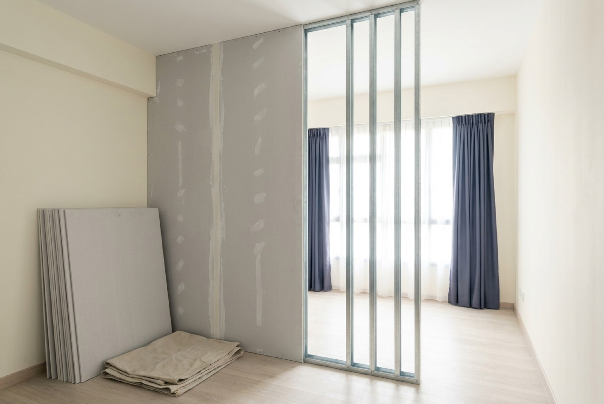

Drywall & partition wall installation in Singapore

A drywall partition is the fastest way to add a room, close off a study nook or square up an awkward corner in a Singapore flat — metal studs, plasterboard, tape, skim, paint, done in about a week with almost no wet work. As a 2026 market guide, budget roughly S$20–40 per square foot of wall face supplied and installed, which puts a typical room-dividing wall of about 72 sq ft at around S$1,500–2,800 finished ready for paint. This guide covers the build-up, drywall versus a brick wall, what pushes the price up, and the one thing you must decide before the boards go on.
What a drywall partition actually is
Strip away the jargon and it's a hollow wall made in layers:
- Track and studs. A metal channel is fixed to floor and ceiling, then vertical steel studs (usually at 400–600 mm centres) are dropped in to form the skeleton.
- Services first. Any electrical conduit, data cabling or switch boxes are run inside the cavity while it's still open. This is the point of no return — see the section on fixing heavy things below.
- Boarding. Plasterboard is screwed to both faces. A single 12 mm layer per side is standard; double boarding is an upgrade.
- Taping and jointing. Joints are taped and filled, screw heads spotted, corners beaded, then the whole face is skimmed so it reads as one continuous plane.
- Prime and paint. Fresh board is thirsty — it needs a proper sealer coat before the finish coats.
Steps 4 and 5 are where cheap drywall jobs get exposed. A wall can be perfectly straight and still look terrible if the joints telegraph through the paint. Our guide to wall plastering and skim coat cost covers that finishing stage in detail.
Drywall & partition wall cost in Singapore
Contractors quote partitions by the square foot of wall face — the visible area of one side, height × length. The figures below are indicative of the Singapore market in 2026 for residential work:
| Scope | Typical price (SGD) | Notes |
|---|---|---|
| Drywall partition, supplied & installed | $20 – $40 per sq ft | Studs, boards, tape, skim — ready for paint |
| Room-dividing wall (approx. 8 ft × 9 ft ≈ 72 sq ft) | $1,500 – $2,800 | The most common HDB scope |
| Short stub / feature wall | $600 – $1,200 | Half-height, TV wall, corner infill |
| Door opening formed in partition | +$250 – $600 | Frame, lintel, reinforced jambs — door leaf extra |
| Rockwool insulation in cavity | +$3 – $6 per sq ft | Sound-dampening upgrade |
| Double boarding (one or both faces) | +$5 – $10 per sq ft | Better sound and impact resistance |
Two anchors from real projects, for scale. On a whole-flat renovation we completed in Bukit Panjang, the ceiling and cotton pelmet work came to S$4,450 and full-house plastering S$3,900 — board-and-skim trades run into real money once they cover an entire flat, which is why partitions are usually priced and decided one wall at a time. The full itemised list is in our $38,000 renovation breakdown.
Drywall vs a brick wall: which should you build?
Both have a place. The honest comparison:
| Drywall partition | Masonry (brick / block) | |
|---|---|---|
| Build time | 1–2 days + finishing | Several days + curing before plaster |
| Mess | Minimal — mostly dry work | Wet trade, sand and cement on site |
| Weight on the slab | Light | Heavy |
| Sound blocking | Fair, good with insulation + double board | Better by default |
| Heavy wall-hung loads | Needs backing planned in advance | Screws almost anywhere |
| Wet areas | Not suitable unless specified for it | Standard choice |
| Reversibility | Easy to take down later | Hacking job, permit, debris |
The short version: drywall for speed, weight and flexibility; masonry for mass, wet areas and heavy fixings. Most HDB partition jobs land on drywall, and the sound trade-off is manageable if you specify insulation up front rather than discovering the problem after the paint is dry.
What people actually build them for
- Splitting a bedroom. Turning one oversized room into two for a growing family — the single most common request.
- Carving out a study or WFH corner. A half-partition or L-shaped return that makes a nook feel like a room without closing it in.
- Closing off an open kitchen. Keeping cooking smells out of the living area in a flat that came open-plan.
- TV feature walls. A false wall built in front of the structural wall to hide cabling, house a recessed niche, and give a flush surface to mount on.
- Boxing in pipes and trunking. Vertical bulkheads that hide risers and aircon pipe runs — the wall equivalent of a false ceiling.
- Squaring up a room. Furring out a wall so wardrobes and carpentry sit flush against a straight line rather than a bowed one.
The decision you must make before boarding
This is the mistake worth writing in capitals. Decide what will hang on the wall before the plasterboard goes on.
A finished drywall is hollow between the studs. Screw a TV bracket into bare board and it will hold for a while and then tear out, usually taking a chunk of the wall with it. The correct method is to build backing into the cavity while the frame is still open — timber noggings or extra steel exactly where the load will sit:
- TV bracket: a horizontal timber run at bracket height, wide enough to allow for shifting the TV later.
- Wall-hung wardrobe or kitchen cabinets: a continuous backing rail along the fixing line.
- Shelving, mirrors, grab rails: local blocking at each fixing point.
- Wall-mounted basin or anything wet: reconsider the wall type entirely — this is masonry territory.
Photograph the open frame before boarding. Six months later, when you want to hang something, that photo tells you exactly where the solid backing is. If you're already past that stage, our guides on mounting a TV on an HDB wall and furniture assembly and anchoring cover the cavity-anchor options — workable for light loads, not a substitute for real backing.
Making a partition quieter
A plain single-boarded stud wall transmits speech. If the wall separates a bedroom from a living area, specify the upgrades at quotation stage:
- Rockwool in the cavity — the highest-value single addition, and cheap while the wall is open.
- Double boarding on one or both faces, with joints staggered so they don't line up.
- Seal every edge. Sound leaks through gaps at floor, ceiling and around switch boxes far more than it passes through the board itself. Back-to-back sockets in the same stud bay are a classic weak point.
- Solid-core door if there's an opening. A hollow door undoes most of the wall's performance.
None of these are default. They are line items, and a quote without them is quoting a different wall.
HDB rules and permits
Taking a wall down is the regulated part. Structural walls in HDB flats cannot be removed at all, and altering or demolishing non-structural walls requires an HDB renovation permit — with the work done by an HDB-registered renovation contractor. Our guide to HDB hacking and demolition rules covers that side.
Putting a new lightweight partition up generally sits within permitted renovation works, but the requirements depend on the flat, the wall's position and what else is happening in the same renovation. Rules are also updated periodically. Check the current position with HDB, and have your contractor apply for a permit where one is needed before anything starts. Broader construction and workmanship standards fall under the Building and Construction Authority (BCA).
Practical notes that catch people out: keep drilling and cutting within HDB's permitted renovation hours, and remember that a new partition may block a lighting point or an aircon fan-coil that was positioned for the old room layout — worth checking against your electrical works plan.
Walls, ceilings and where the trades meet
Drywall walls and false ceilings are the same trade with the same materials, and they should be sequenced together. If your job includes both, build the ceiling and any cove or L-box first, then the partition, then skim the junction so wall and ceiling meet in one clean line rather than an open seam. Doing both in one mobilisation also means protection sheets, access platforms and clean-up happen once. Our false ceiling and cove lighting guide covers the overhead half of the work.
Frequently asked questions
How much does a drywall partition cost in Singapore?
Roughly $20–40 per square foot of wall face supplied and installed, so a typical room-dividing wall around 8 ft × 9 ft (about 72 sq ft) lands at $1,500–2,800 finished and ready for paint. A short stub or feature wall is often $600–1,200. Door openings, insulation and double boarding add to the rate.
Is drywall cheaper than a brick wall?
Usually — and faster and lighter. Drywall is studs and board in a day or two with almost no wet work; masonry needs bricklaying, curing and full plastering. Brick still wins for sound mass, wet areas and heavy wall-hung loads.
Can I hang a TV or wardrobe on a drywall partition?
Yes, if the backing is planned before boarding. Timber or steel noggings go inside the wall exactly where the bracket or rail will sit. Retrofitting into finished drywall means cavity anchors, which carry far less load.
Do I need an HDB permit to build a partition wall?
Removing or altering an existing wall almost always does, and structural walls can't be touched at all. A new lightweight non-structural partition generally falls within permitted works, but rules vary by flat and are updated periodically — have your contractor check with HDB and apply where needed.
Is a drywall partition soundproof?
Not on its own. Add rockwool in the cavity, double boarding, sealed edges and a solid-core door and it performs well. Specify these at quotation stage — they are cost options, not the default build-up.
How long does it take?
One to two days for studs and boarding, a day or two for taping and skim, then drying before paint. Allow about a week for a finished, painted partition.
Getting it done by RK E&C
RK E&C is a Singapore-registered renovation contractor (UEN 202442767D) building drywall partitions, feature walls, bulkheads and false ceilings in HDB flats and condos island-wide — framed, boarded, taped, skimmed and painted by one team, so there's no gap between the drywall trade and the finishing trade. We measure on site, ask where the loads will go before we board, and give a fixed price before work starts. Browse our other guides for the rest of your renovation.
Send a photo of the space and your postal code via our contact form or WhatsApp and we'll quote you — usually the same day.
Need an extra room?
Send photos of the space and your postal code. Fixed-price drywall partition quote — framed, boarded, skimmed and painted, island-wide.
Prices are indicative of the Singapore market in 2026 and not a quotation. Wall size, access and specification drive cost — confirm a fixed price after an on-site measure before work begins.